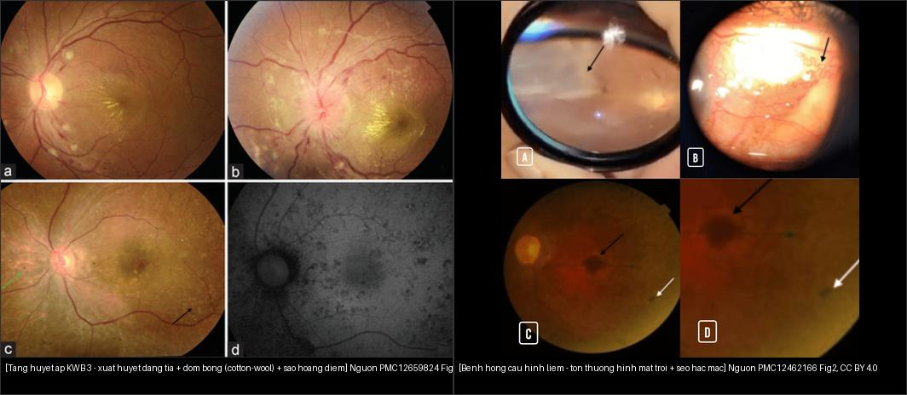
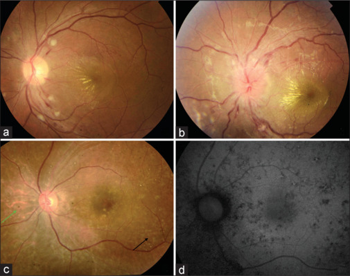
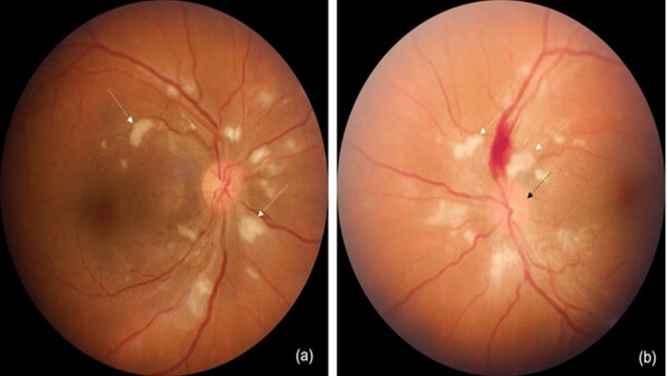
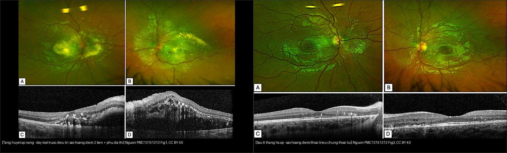
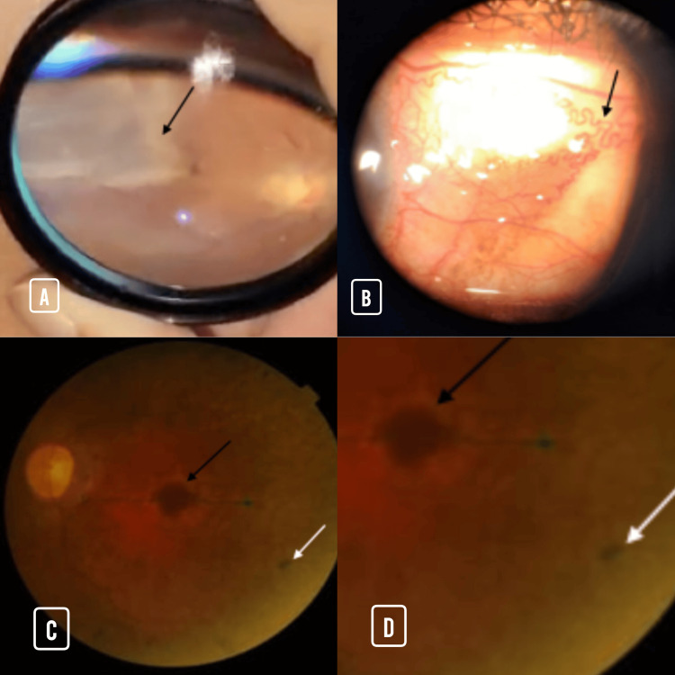
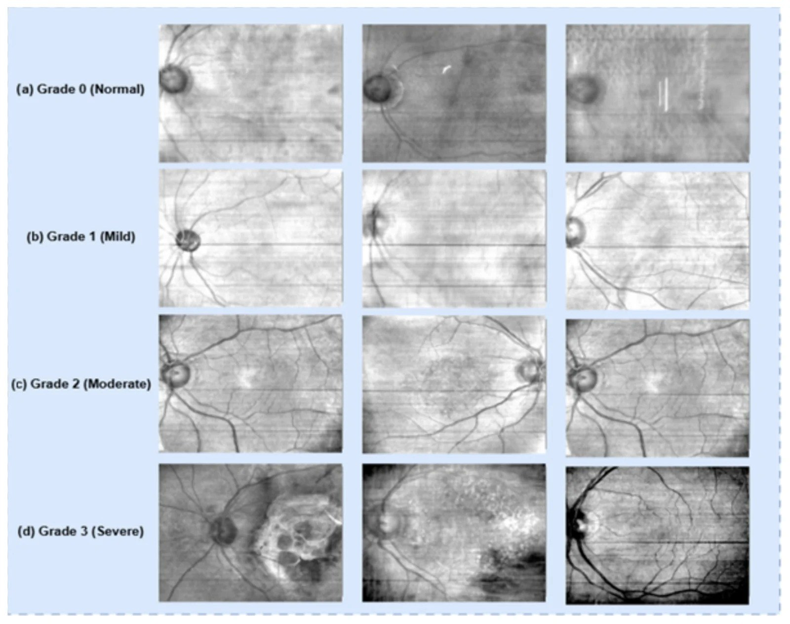

453 — Bệnh võng mạc do tăng huyết áp & bệnh máu / Hypertensive & hematologic (anemic) retinopathy
Tags: pattern:benh-vong-mac-tang-huyet-ap vung:vong-mac score:Keith-Wagener score:Goldberg protocol:soi-day-mat
Mức chắc chắn (certainty): tổng hợp y văn (literature synthesis) — nhóm tự biên từ 6 nguồn mở (Indian J Ophthalmol 2025 CC BY-NC-SA + Cureus 2025 CC BY + BMC Ophthalmol 2026 CC BY + Diagnostics 2026 CC BY + Bioengineering 2026 CC BY + J Clin Med/Cureus CC BY), chưa gắn ca nguyên văn đơn lẻ.
1. Tổng quan — cùng một đáy mắt "tăng áp/thoát huyết tương", hai cơ chế khác nhau
- Nguyên lý gộp (bản chất): cả tăng huyết áp (hypertension — HTN) và bệnh máu (thiếu máu/hemoglobinopathy/leukemia) đều làm hàng rào máu–võng mạc (blood–retinal barrier) vỡ và tắc các mạch nhỏ tiền mao mạch → chung một "bộ dấu" gồm co/nick tiểu động mạch, đốm bông, xuất huyết, phù. Phân biệt không dựa vào một dấu đơn lẻ mà dựa vào bối cảnh hệ thống (huyết áp? công thức máu?) + kiểu/thời điểm tổn thương.
- Cơ chế tăng huyết áp (vì sao ra hình ảnh):
- Tăng áp lực nội mạch phá tự điều hòa (autoregulation) → giai đoạn co mạch (vasoconstrictive) rồi xơ hóa thành mạch (arteriolosclerosis) → nick động–tĩnh mạch (arteriovenous nicking) khi tiểu động mạch xơ đè tĩnh mạch tại giao thoa.
- Đốm bông (cotton-wool spot) = nhồi máu lớp sợi thần kinh (retinal nerve fiber layer — RNFL) → ứ vật liệu vận chuyển trục (axoplasmic transport) → đám trắng mờ bờ tua.
- Xuất huyết dạng tia (flame/splinter hemorrhage) nằm nông ở lớp sợi thần kinh nên xòe ngang theo sợi — khác xuất huyết chấm–đốm (dot-blot) ở lớp sâu (sâu hơn → tròn, gặp trong đái tháo đường).
- Sao hoàng điểm (macular star): dịch giàu lipid thoát vào lớp rối ngoài dày (Henle) → lắng đọng hình nan hoa/cánh sao quanh hoàng điểm; phù đĩa ở giai đoạn ác tính là bệnh thần kinh thị do thiếu máu (ischemic optic neuropathy) chứ không phải tăng áp nội sọ.
- Cơ chế thiếu máu (vì sao ra hình ảnh): giảm hemoglobin → giảm vận chuyển oxy → võng mạc thiếu oxy → giãn mạch + tăng lưu lượng + tổn thương nội mô → xuất huyết, đốm bông, tĩnh mạch giãn/vằn (venous tortuosity). Roth spot = xuất huyết có trung tâm trắng (cục fibrin/đốm bông nằm giữa ổ xuất huyết).
- Ngưỡng định lượng nằm lòng:
- Xếp độ Keith–Wagener–Barker (KWB) I–IV; tăng huyết áp ác tính (malignant HTN) = huyết áp tâm thu ≥ 180 mmHg hoặc tâm trương 110–120 mmHg + phù gai; phù gai (= KWB IV) là cấp cứu nội khoa, tổn thương cơ quan đích (TOO) gồm mắt–thận–não–tim.
- Bệnh võng mạc thiếu máu (anemic retinopathy): Hb < 8,95 g/dL dự báo có bệnh võng mạc (Se 85,8%, Sp 68,9%); hematocrit < 30,5% (Se 80%); nên soi đáy mắt khi Hb < 10 g/dL; Hb trung bình nhóm bệnh võng mạc 7,82 ± 1,64 g/dL.
2. Mẫu hình + chẩn đoán phân biệt theo cơ chế (gamut)
- Tăng huyết áp cấp/thoát huyết tương (exudative): đốm bông + xuất huyết dạng tia + phù võng mạc/sao hoàng điểm + có thể phù gai → HTN nặng (KWB III–IV), hội chứng não sau có hồi phục (PRES), tiền sản giật.
- Tăng huyết áp mạn/xơ mạch (sclerotic): co tiểu động mạch, nick AV, động mạch "dây đồng/dây bạc" → không đặc hiệu, gặp cả ở người già bình thường.
- Thiếu máu/bệnh máu (hemorrhagic-anemic): xuất huyết dạng tia + đốm bông + Roth spot + tĩnh mạch giãn, giảm thị lực đột ngột do xuất huyết hoàng điểm.
- Bệnh hồng cầu hình liềm (sickle cell retinopathy — SCR): tắc tiền mao mạch ngoại vi → NPSR (mảng cá hồi/salmon patch, đốm óng ánh, đốm mặt trời đen/black sunburst) → PSR với "quạt biển" (sea fan) tân mạch, tự nhồi máu thành quạt trắng.
- Đái tháo đường (gamut chéo — bài 443): xuất huyết chấm–đốm sâu + phù hoàng điểm + MAs/HE; tăng huyết áp hay đi kèm (thường phải chủ động tìm HTR khi đọc DR).
- Tắc mạch võng mạc (gamut chéo — bài 444): ổ tím sẫm một vùng (nhồi máu) ± cherry-red spot, diễn tiến giờ–ngày, khác HTR/thiếu máu lan tỏa hai bên.
3. Bảng so sánh phân biệt (ma trận đối chiếu)
| Thực thể (entity) | Hình ảnh điển hình | Chốt vào (rule-in) | Chốt loại (rule-out) | Gợi ý xác nhận |
|---|---|---|---|---|
| HTR mạn KWB I–II | Co tiểu động mạch nhẹ, nick AV, "dây đồng/bạc" | HA tăng kéo dài + nick AV hai bên | Nick AV đơn độc ở người già → không gọi bệnh võng mạc | Đo HA nhiều lần, theo dõi định kỳ |
| HTR cấp/ác tính KWB III–IV | Đốm bông + xuất huyết dạng tia + sao hoàng điểm, KWB IV có phù gai | HA ≥ 180/110–120 mmHg + phù gai/sao hoàng điểm | HA bình thường → tìm thiếu máu/IIH/viêm | Đo HA tức thì, CBC, (nghi ngờ) MRI não nếu PRES |
| Bệnh võng mạc thiếu máu | Xuất huyết dạng tia + đốm bông + Roth spot, tĩnh mạch giãn | Hb < 8,95 g/dL hoặc Hct < 30,5% + hai bên | Hồng cầu bình thường + HA cao → HTR | Công thức máu (Hb, Hct), nội soi/tìm nguồn máu |
| Sickel cell (SCR) | NPSR: mảng cá hồi/đốm mặt trời; PSR: quạt biển | Bệnh hồng cầu hình liềm + tổn thương ngoại vi/quạt biển | Tổn thương trung tâm đơn độc → nghĩ khác | Điện di Hb, soi đáy mắt góc rộng định kỳ |
| Bệnh máu (leukemia) | Xuất huyết hoàng điểm đột ngột ± Roth spot, giảm thị lực nhanh | Thiếu máu + giảm tiểu cầu ± tăng bạch cầu | Công thức máu bình thường → loại | CBC + tủy đồ, khám huyết học |
| Viêm (neuroretinitis — bắt chước) | Phù gai + sao hoàng điểm, hội chứng nhiễm trùng/viêm | Bối cảnh viêm + (HA có thể bình thường) | HA rất cao + thận → HTR giả neuroretinitis | Huyết thanh/nội soi đáy mắt; đo HA trước khi kết luận |

Trái: sao hoàng điểm + xuất huyết dạng tia + đốm bông (PMC12659824 Fig. 1, CC BY-NC-SA). Phải: tổn thương "mặt trời" (mũi tên đen) + sẹo hắc mạc (mũi tên trắng) trong bệnh hồng cầu hình liềm (PMC12462166 Fig. 2, CC BY 4.0). Ảnh ghép letterbox.Quiz composite: che 2 nhãn, hỏi dấu nào (sao hoàng điểm hai bên vs tổn thương ngoại vi hình mặt trời) phân biệt trái/phải?
Bấm để hiện đáp án
- Trái = bệnh võng mạc tăng huyết áp (HTR): tổn thương trung tâm/hoàng điểm — sao hoàng điểm (dịch giàu lipid ở lớp Henle) + xuất huyết dạng tia (nông) + đốm bông (nhồi RNFL); hai bên, kèm HA tăng.
- Phải = bệnh võng mạc hồng cầu hình liềm: tổn thương ngoại vi — đốm "mặt trời" (black sunburst, tăng sắc tố quanh mạch tắc) + sẹo hắc mạc; bệnh cảnh thiếu máu tán huyết.
- Chốt phân biệt: vị trí + bối cảnh hệ thống — trung tâm/hoàng điểm + HA cao = HTR; ngoại vi + hemoglobinopathy = SCR.
4. Protocol chụp + hệ phân độ (KWB, Goldberg) & tiếp cận
- Bước 0 — luôn ĐO HUYẾT ÁP ở mọi bệnh nhân phù gai / sao hoàng điểm / xuất huyết võng mạc hai bên (kể cả trẻ em — đo HA theo tuổi/bách phân vị).
- Khám: soi đáy mắt giãn đồng tử hai bên; chụp đáy mắt/ảnh góc rộng (widefield) để theo dõi; OCT hoàng điểm (phù/dịch dưới võng mạc, sao hoàng điểm); FFA/ICG khi nghi viêm–thiếu máu; OCT-RNFL khi nghi bệnh thần kinh thị (bài 442/433).
- Phân độ Keith–Wagener–Barker (KWB):
- I: co tiểu động mạch nhẹ, có thể vằn nhẹ.
- II: co rõ + nick AV + thay đổi xơ mạch ("dây đồng/bạc").
- III: II + đốm bông, xuất huyết dạng tia, hard exudate (sao hoàng điểm) = bệnh võng mạc "thực sự" (−)về mặt hình ảnh).
- IV: III + phù gai (papilledema) = tăng huyết áp ác tính → cấp cứu (TOO).
- Phân độ Goldberg (bệnh hồng cầu hình liềm — SCR): 1 tắc tiểu động mạch ngoại vi; 2 thông nối tiểu động–tĩnh mạch ngoại vi; 3 tân mạch/xơ (sea fan); 4 xuất huyết dịch kính; 5 bong võng mạc. NPSR ≈ mảng cá hồi/đốm mặt trời không tân mạch; điều trị khi Goldberg ≥ 3 (laser tán/cản hoặc anti-VEGF, cắt dịch kính khi biến chứng).
- Xử trí tăng huyết áp ác tính: hạ HA có kiểm soát (không tụt quá nhanh — giảm MAP khoảng ≤ 20–25% trong giờ đầu) để tránh nhồi máu thần kinh thị/não; điều trị nguyên nhân (bệnh thận, hẹp động mạch thận, tiền sản giật).
flowchart TD
A[Day mat: dom bong / xuat huyet dang tia / sao hoang diem / phu gai] --> B{Do huyet ap}
B -->|HA >= 180/110-120 + phu gai| C[Tang huyet ap ac tinh KWB IV - cap cuu TOO]
B -->|HA cao vua| D[HTR KWB III - kiem soat HA + danh gia than/nao/tim]
B -->|HA binh thuong| E{Phu gai + sao hoang diem 2 ben}
E -->|Co thieu mau| F[Benh vong mac thieu mau - cong thuc mau, tim nguon mat mau]
E -->|Bat thuong huyet sac to| G[SCR - dien di Hb, Goldberg >=3 -> laser/anti-VEGF]
E -->|Khong thieu mau| H["Can nhac IIH / viem (neuroretinitis) / sai khuc xa"]
C --> I[Ha HA <= 20-25% MAP gio dau + dieu tri nguyen nhan]
5. Biến thể bình thường và cạm bẫy
- Phù gai + sao hoàng điểm bị nhầm "viêm thần kinh thị võng mạc (neuroretinitis)" → cho corticoid oan. Ca trẻ 9 tuổi (HA 165/118 mmHg, hẹp động mạch thận một bên, thận thiểu sản) khởi đầu được chẩn đoán neuroretinitis; hạ HA 6 tháng làm sạch sao hoàng điểm + phù gai, thị lực hồi phục (PMC13151313). Luôn đo HA trước khi kết luận viêm.
- HA rất cao giả "phù gai do tăng áp nội sọ/IIH" — cùng chân dung nhưng cơ chế khác hoàn toàn (đọc bối cảnh + HA).
- Nick AV ở người già là biến thể của lão hóa mạch, không đủ gọi bệnh võng mạc — tránh overcall KWB I–II.
- Đọc độ sâu xuất huyết: nông/xòe tia (HTR, thiếu máu, tăng áp) vs sâu/chấm-đốm (đái tháo đường) — nhưng cả hai có thể đi kèm ở bệnh nhân đái tháo đường + tăng huyết áp; không gán một nguyên nhân.
- Bệnh võng mạc thiếu máu có thể chỉ điểm bệnh nền tiềm ẩn (ung thư, loét chảy máu, thalassemia) → đi tìm nguồn thiếu máu, không dừng ở mắt.
- Hai bên nhưng không đối xứng (ca PRES: phải KWB 3, trái KWB 4) vẫn tính là bệnh hệ thống — đừng loại vì một mắt "nhẹ".
6. Tự lượng giá — Blind Quiz
Ca 1 — Nữ, huyết áp không được kiểm soát, mờ mắt hai bên. Đáy mắt dưới đây:

- Gợi ý lâm sàng: người lớn, HA cao, nhìn mờ hai bên.
- Hỏi: mô tả các dấu chính? Đây là bệnh võng mạc gì và xếp độ nào? Nếu thêm phù gai thì đổi xếp độ/xử trí ra sao?
Bấm để hiện đáp án (findings + chẩn đoán)
- Dấu hiệu (findings): xuất huyết dạng tia (splinter) + đốm bông (cotton-wool) + sao hoàng điểm/tiết dịch hoàng điểm đang thoái triển.
- Chẩn đoán (diagnosis): bệnh võng mạc tăng huyết áp KWB III.
- Nếu thêm phù gai → KWB IV = tăng huyết áp ác tính, cấp cứu (tổn thương cơ quan đích), phải hạ HA có kiểm soát + tìm nguyên nhân (thận/tiền sản giật).
- Nguồn ảnh: Indian J Ophthalmol 2025 (PMC12659824) Fig. 1, CC BY-NC-SA.
Ca 2 — Bệnh nhân HA 240/120 mmHg, co giật, đáy mắt một bên có phù gai:

- Hỏi: dấu nào cho thấy KWB IV? Hội chứng thần kinh đi kèm là gì? Nguyên tắc hạ HA?
Bấm để hiện đáp án (findings + chẩn đoán)
- Dấu hiệu (findings): đốm bông hai bên (mũi tên trắng) + xuất huyết dạng tia + phù gai (disc edema, mũi tên đen) mắt trái.
- Chẩn đoán (diagnosis): bệnh võng mạc tăng huyết áp KWB IV trong tăng huyết áp ác tính; MRI não cho PRES (tăng tín hiệu T2/FLAIR vỏ–dưới vỏ hai bên) kèm co giật.
- Xử trí: nhập ICU, hạ HA có kiểm soát (≤ 20–25% MAP giờ đầu) + theo dõi thần kinh/thận; thị lực thường hồi phục khi HA ổn.
- Nguồn ảnh: Cureus 2025 (PMC12095965) Fig. 1, CC BY 4.0.
Ca 3 — Bé gái 9 tuổi, mờ mắt hai bên nặng, được nghĩ "neuroretinitis". Đáy mắt (trái) và đáy mắt sau điều trị (phải):

- Hỏi: vì sao KHÔNG nên kết luận neuroretinitis ngay? Xét nghiệm nào bị bỏ sót? Nhìn cặp ảnh trước–sau rút ra điều gì?
Bấm để hiện đáp án (findings + chẩn đoán)
- Dấu hiệu (findings): phù gai + sao hoàng điểm hai bên + xuất huyết dạng tia (dễ nhầm neuroretinitis/papilledema).
- Chẩn đoán (diagnosis): bệnh võng mạc tăng huyết áp giả neuroretinitis ở trẻ — bệnh nhân HA 165/118 mmHg, hẹp động mạch thận một bên + thận thiểu sản (chỉ đóng góp 7% chức năng thận).
- Bài học: trẻ có phù gai/sao hoàng điểm phải ĐO HUYẾT ÁP (dù hiếm); hạ HA (amlodipine/enalapril/acebutolol) hồi phục thị lực + thoái lui ổ dịch trong 6 tháng — nguồn ảnh: BMC Ophthalmol 2026 (PMC13151313) Fig. 1 & 3, CC BY 4.0.
Ca 4 — Bệnh nhân thiếu máu/hemoglobinopathy, tổn thương ngoại vi + sẹo hắc mạc; phân độ theo Goldberg:

- Hỏi: đây là nhóm NPSR hay PSR? Phân độ Goldberg gồm những mốc nào? Khi nào cần can thiệp?
Bấm để hiện đáp án (findings + chẩn đoán)
- Dấu hiệu (findings): tổn thương "mặt trời" (black sunburst — mũi tên đen) + sẹo hắc mạc (mũi tên trắng) ở ngoại vi → tổn thương tắc mạch nhỏ ngoại vi (NPSR).
- Phân độ Goldberg 1–5: 1 tắc tiểu động mạch → 2 thông nối động–tĩnh mạch → 3 quạt biển (sea fan, tân mạch) → 4 xuất huyết dịch kính → 5 bong võng mạc.
- Ngưỡng hành động: Goldberg ≥ 3 → cân nhắc laser tán/cản hoặc anti-VEGF, cắt dịch kính khi xuất huyết dịch kính/bong võng mạc co kéo.
- Nguồn ảnh: Cureus 2025 (PMC12462166) Fig. 2, CC BY 4.0.
Ca 5 — Sơ đồ en-face OCT xếp độ bệnh võng mạc tăng huyết áp (Grade 0–3). Nhìn hình, đọc thứ tự độ:

- Hỏi: hình nào là độ nặng nhất? Công cụ này hỗ trợ gì cho phân độ KWB?
Bấm để hiện đáp án
- Panel: (a) Grade 0 bình thường → (b) 1 nhẹ → (c) 2 trung bình → (d) 3 nặng theo sơ đồ "lấy cảm hứng KWB".
- En-face OCT phản ánh tổn thương mạch máu võng mạc theo bản đồ phẳng (mật độ mạch) — hỗ trợ khách quan hóa/chuẩn hóa phân độ (đặc biệt cho trí tuệ nhân tạo), bổ sung cho soi đáy mắt lâm sàng.
- Nguồn ảnh: Bioengineering 2026 (PMC13603191) Fig. 1, CC BY 4.0.
Bài liên quan chéo
- 400 – Tổng quan Mắt & thị giác (bảng DDx mắt)
- 443 – Võng mạc đái tháo đường (xuất huyết chấm–đốm sâu; HA hay đi kèm)
- 444 – Tắc mạch võng mạc (CRVO/BRVO/CRAO) (nhồi máu vùng, cherry-red)
- 451 – Biểu hiện mắt của bệnh hệ thống (bệnh hệ thống → mắt)
- 433 – Phù đĩa thị vs drusen (phù gai không do HA)
- 430 – Đường thị giác (phù gai thật vs giả)
Ảnh
- Tên file:
453_slug_Modality_SourceID.jpg; nguồn + giấy phép từng ảnh trongimages/CREDITS.md. - Ảnh CC BY-NC-SA (PMC12659824) giữ nguyên bản trong composite, không crop/kéo giãn.
- AuntMinnie (Case of the Day): chỉ dẫn link, không tải.
Không dùng để chẩn đoán độc lập khi chưa có người hướng dẫn.